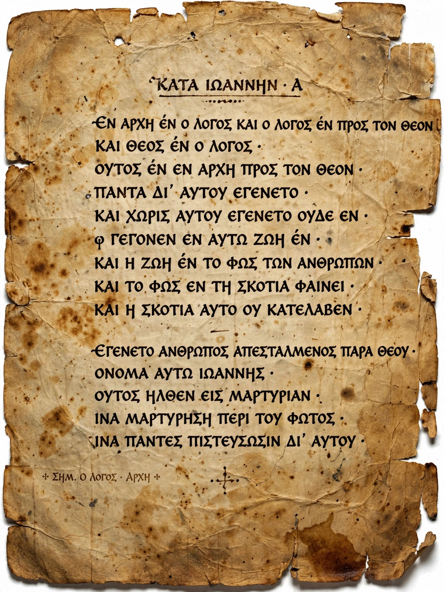

| Author | Aristotle |
|---|---|
| Written | c. 335 BC |
| Subject | Literary theory; tragedy; epic poetry |
| Status | Surviving first book (on tragedy and epic); book on comedy lost |
The Poetics (Greek: Περὶ ποιητικῆς) is the earliest surviving work of Greek dramatic theory and the first extant philosophical treatise to focus on literary theory. Written by Aristotle around 335 BC, it analyses poetry as a form of mimesis (imitation) and gives an account of tragedy that has shaped Western criticism for more than two millennia. The work survives in a single book devoted mainly to tragedy and epic; a second book on comedy is lost.
Aristotle begins by classifying the arts by their medium, object and mode of imitation. His celebrated definition makes tragedy "an imitation of an action that is serious, complete, and of a certain magnitude; in language embellished with each kind of artistic ornament … in the form of action, not of narrative; through pity and fear effecting the proper purgation (katharsis) of these emotions."
He identifies six qualitative parts of tragedy — plot (mythos), character (ethos), diction, thought, spectacle and song — and ranks plot first: tragedy is an imitation not of persons but of action and life. Complex plots involve reversal (peripeteia) and recognition (anagnorisis); the best tragic hero is a person neither wholly good nor bad whose downfall follows from an error (hamartia). Sophocles' Oedipus Rex is his recurrent model. Later chapters compare tragedy with epic poetry, arguing for tragedy's superiority, and discuss diction and problems of criticism.
The treatise also preserves a brief history of drama: tragedy arose from the dithyramb, gained its second actor with Aeschylus and its third, with scene painting, from Sophocles — developments following the first separation of actor from chorus credited to Thespis.
Preserved through Syriac and Arabic intermediaries and reintroduced to Latin Europe in the Renaissance, the Poetics was hardened by early modern critics into doctrines Aristotle never stated, notably the "three unities" of time, place and action. Romantic and modern critics reacted against these rules, but concepts such as catharsis, hamartia and the primacy of plot remain central to narrative theory in literature, theatre and film.